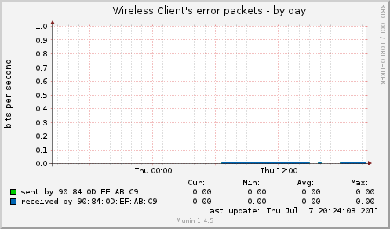
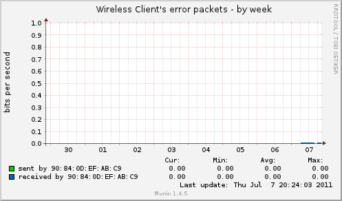
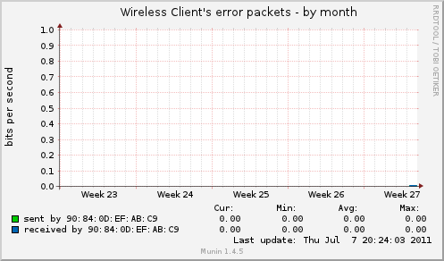
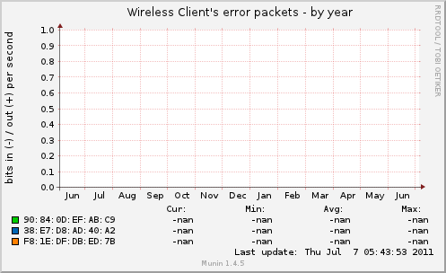

Overview :: localdomain :: localhost.localdomain :: Airport Client Error Packets py |
|  |  | ||||||||||||||||||||||||
|  |  | ||||||||||||||||||||||||
|
|||||||||||||||||||||||||
| Overview :: localdomain :: localhost.localdomain :: Network_monitor:niket-shahs-airport-extreme :: | |||||||||||||||||||||||||
| This page was generated by Munin version 1.4.5 at 2011-07-08 02:52:17-0600 (MDT) |